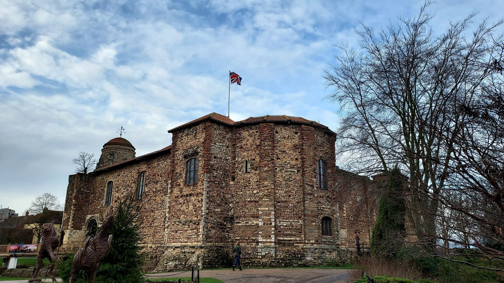
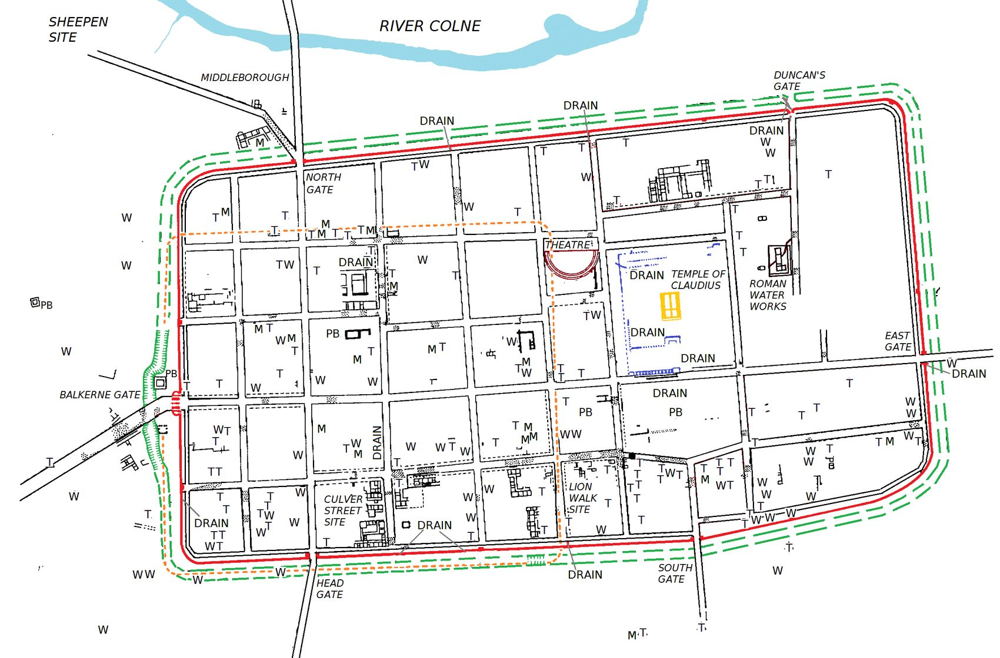
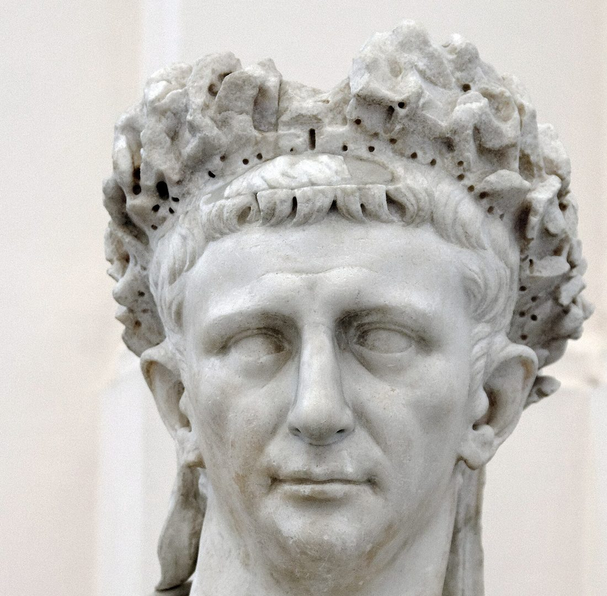

Unit 4 · Boudicca · Lesson 3
Ruling the province: governor, procurator, veterans and the imperial cult
How did Rome run Britain in the years before the revolt, and why did the way it was run make enemies?
Year 11 Ancient History · Present with → or space · Read on a phone with R

Review · books closed · 6 minutes · press K for the timer
Five questions from Unit 3 and Lessons 1–2
- Name one thing Tacitus’s Germania is reliable evidence for, and one thing it is not. Reliable for Roman views of Germanic customs and punishments in about 98 CE, when Tacitus wrote it. Not, on its own, for why any one bog body died: Tollund Man died about 500 years before Tacitus wrote.
- What does the Great Torc from Snettisham suggest about its makers, and why is calling it an ‘Iceni torc’ only an inference? Highly skilled metalworkers who worked gold mixed with silver. It was buried in the 1st century BCE (most Snettisham hoards around 60 BCE), about a century before the first certain mention of the Iceni (Tacitus, on events of 47 CE), in the area where Iceni coins are later found: a link of place, not proof.
- What was a client king? Name one in Britain. A local ruler allowed to keep his kingdom as Rome’s ally, in return for loyalty: Prasutagus of the Iceni, Cartimandua of the Brigantes, or Cogidubnus. Tacitus calls such kings Rome’s ‘instruments of dominion’ (Agricola 14).
- Why did the Iceni resist Rome in about 47 CE, and what happened? The governor, Ostorius Scapula, ‘prepared to disarm all whom he suspected’. The Iceni, allies by choice, were ‘the first to resist’; his troops stormed their barrier and routed them (Annals 12.31).
- Writing · deconstruct this question: what is the verb, and what must the answer do? “Explain how historians identify the Iceni.” Explain: ‘Relate cause and effect. Make the relationships between things evident. Provide why and/or how.’ (NESA). So the answer must show how historians identify the Iceni, with the links stated, not list the evidence: a Roman name (Tacitus) matched to the places where Iceni coins are found; say which link matters most, and name a limit.
Mark your own answers in a different colour. Which question did you find hardest?
Learning intentions and success criteria · 2 minutes
Today’s goals
- understand how Roman Britain was organised
- account for the grievances its organisation created
- explain the roles of the governor and the procurator
- explain the purpose of the colonia and the imperial cult
- account for British grievances in expanded sentences (because / but / so; appositives)
Syllabus outcomes: AH-11-02 proposes ideas about the varying causes and effects of events and developments · AH-11-03 explains the role and significance of forces, features, events, individuals and groups in shaping the past · AH-11-05 analyses different types of sources for evidence to support a historical account or argument · AH-11-07 communicates historical understanding, applying historical knowledge, terms and concepts. Life Skills: AH-LS-04 recognises causes and effects of events or developments · AH-LS-11 communicates information about the past using historical terms and concepts.
Note-making · the routine for the whole course
How to structure your notes
questions and key terms, written after
short phrases, arrows (→ leads to), abbreviations (c. = about; gov. = governor; proc. = procurator)
- 1A new pageA cue column about a quarter of the page wide; title and date at the top; room for a summary at the bottom.
- 2Listen and look, then writeDon’t copy while a slide is being explained. Phrases, not sentences; a source for every claim.
- 3Write your own notes at each ✎ checkpointThen compare with the model notes, one row at a time. Add what you missed in a second colour.
- 4Write the cue questions afterwardsUse exam verbs: explain, account for, assess. To revise, cover your notes and answer the cues.
- 5Finish with a three-sentence summaryTwo checkpoints today: how Roman Britain was run · the colony, the temple and a Roman’s version of British complaints.
Key vocabulary · add to the unit word wall
Words for how Rome ran a province
| Content terms | Meaning |
|---|---|
| Governor / procurator | The emperor’s army commander and chief judge in a province (Suetonius Paulinus) / the official who ran its finances and taxes (Decianus Catus). |
| Veteran / colonia | A retired soldier / a town of Roman citizens, often veterans; Camulodunum was the first in Britain. |
| Imperial cult | The worship of the emperor or deified emperors, such as the temple of the Divine Claudius. |
| Client king | A local ruler allowed to keep his kingdom as Rome’s ally, in return for loyalty. |
| Directive verb (NESA) | Meaning |
|---|---|
| Account for | ‘state reasons for, report on.’ — The reasons why something happened. |
| Writing terms | Meaning |
| Appositive | A noun group that renames a noun: ‘Decianus Catus, the procurator,’ |
| Kernel sentence | A short, complete sentence that you extend with because, but or so. |
| Added for this lesson | Meaning |
| Legate | Tacitus’s word for the governor (in full, legatus Augusti pro praetore): the emperor’s deputy in a province, its army commander and chief judge. |
| Deified (Divine) | Declared a god after death, as Claudius was in 54 CE. |
| Grievance | A complaint about treatment people feel is unfair. |
1 · How Rome ran Britain · I do — the organisation diagram, one press at a time
Who ran Roman Britain on the eve of the revolt?
↓ two officials, each serving the emperor ↓
↓ in Britain: the province, and the allied kingdoms beside it ↓
Aulus Plautius was the first governor of consular rank, and Ostorius Scapula the next. … Then Suetonius Paullinus enjoyed success for two years; he subdued several tribes and strengthened our military posts.
Tacitus (about 55–120 CE), a Roman senator and historian, Agricola 14 (98 CE) · trans. A. J. Church and W. J. Brodribb
The procurator did not work for the governor. After the revolt, the next procurator, ‘at variance with Suetonius’, wrote to Rome against him (Annals 14.38).
1 · How Rome ran Britain · I do — think aloud: where could conflict arise?
A Briton’s land, money and religion: who controlled them?
| A Briton’s … | Who controlled it? | Where could conflict arise? (questions to test) |
|---|---|---|
| Land | The colony at Camulodunum was settled on conquered land; in a client kingdom, the king held it while Rome allowed. | Who loses their farm when veterans settle? What happens to a client kingdom when its king dies? |
| Money and taxes | The procurator, for the emperor. | Who decides how much Britons pay, and to whom can they complain? |
| Religion | The imperial cult at the temple of the Divine Claudius, and the priests chosen to serve it. | Who pays for the cult? What does a temple to a Roman ruler mean to a conquered people? |
| Force | The governor and the army. | Whose side do soldiers take when veterans and Britons clash? |
Next: test these questions against what Tacitus says, in the We do.
Notes checkpoint 1 of 2
How Roman Britain was run
2 · Colony, temple, complaint · We do — supported reading: what did Rome intend?
The colony at Camulodunum: what did Rome intend it to do?
… on the Silures neither terror nor mercy had the least effect; they persisted in war and could be quelled only by legions encamped in their country. That this might be the more promptly effected, a colony of a strong body of veterans was established at Camulodunum on the conquered lands, as a defence against the rebels, and as a means of imbuing the allies with respect for our laws.
Tacitus, Annals 12.32 (written in the early 2nd century CE) · trans. A. J. Church and W. J. Brodribb · the Silures lived in south Wales

Who settled there, and on whose land? Retired soldiers (veterans), on ‘the conquered lands’: land taken from Britons, probably the Trinovantes (the usual reading of Annals 14.31).
What was it for, militarily? ‘a defence against the rebels’: a garrison of veterans in the east, so that the legions could fight the Silures in the west.
And what else did Rome intend? To teach ‘the allies’ respect for Roman law: a model of Roman life for Britons to copy.
‘Rebels’ and ‘allies’ are a Roman’s labels. To the Britons who lost the land, the colony may have looked very different: Tacitus, Annals 14.31, next.
2 · Colony, temple, complaint · We do — supported reading: how did Britons experience them?
The veterans and the temple: how did Britons experience them?
It was against the veterans that their hatred was most intense. For these new settlers in the colony of Camulodunum drove people out of their houses, ejected them from their farms, called them captives and slaves, and the lawlessness of the veterans was encouraged by the soldiers, who lived a similar life and hoped for similar licence. A temple also erected to the Divine Claudius was ever before their eyes, a citadel, as it seemed, of perpetual tyranny. Men chosen as priests had to squander their whole fortunes under the pretence of a religious ceremonial.
Tacitus, Annals 14.31 · trans. A. J. Church and W. J. Brodribb · “their” means the rebels: the Iceni, the Trinovantes (“Trinobantes” in this translation) and others
What did the veterans do, says Tacitus? Drove people from their houses and farms and called them ‘captives and slaves’; serving soldiers backed them.
How did the temple look to Britons? Always in sight, ‘a citadel, as it seemed, of perpetual tyranny’: a sign that Roman rule would never end.
What did the cult cost? The men chosen as its priests had to ‘squander their whole fortunes’ on its ceremonies.
A Roman senator explaining British hatred. He blames Roman misconduct too: ‘the lawlessness of the veterans’.
2 · Colony, temple, complaint · We do — what survives, and intended vs experienced
The temple of the Divine Claudius: what survives?

- A god after death: Claudius died in 54 CE, and ‘Divine honours were decreed to Claudius’ (Annals 12.69).
- Built when? Probably begun after his death; historians still debate it.
- What survives: its podium, about 32 by 23.5 metres, under the Norman castle. Its ‘vaults’ were sand-filled spaces inside the podium, not rooms.
- Who identified it? Mortimer Wheeler, in 1919–20, suggested it was Tacitus’s temple.
What did Rome intend the colony and the temple to do, and how did Britons experience them?
| Rome intended | Britons experienced (Tacitus) | |
|---|---|---|
| Colony | ‘a defence against the rebels’; a model of Roman law for ‘the allies’ (12.32) | houses and farms taken; called ‘captives and slaves’ (14.31) |
| Temple | the centre of the imperial cult in the province: loyalty to the emperor (a modern reading) | ‘a citadel … of perpetual tyranny’; ruinous costs for its priests (14.31) |
Rome meant the colony, and probably the temple, to bind Britons to Rome. Tacitus says both made Britons hate Roman rule.
See the records: Colchester Heritage Explorer, MCC1830 (the temple) and MCC7799 (the podium and its ‘vaults’).
2 · Colony, temple, complaint · We do — whose voice is this really?
A British complaint, in a Roman’s words
Relieved from apprehension by the legate’s absence, the Britons dwelt much among themselves on the miseries of subjection, compared their wrongs, and exaggerated them in the discussion. “All we get by patience,” they said, “is that heavier demands are exacted from us, as from men who will readily submit. A single king once ruled us; now two are set over us; a legate to tyrannise over our lives, a procurator to tyrannise over our property. Their quarrels and their harmony are alike ruinous to their subjects. The centurions of the one, the slaves of the other, combine violence with insult. …”
Tacitus, Agricola 15 (98 CE), a life of his father-in-law, Agricola · trans. A. J. Church and W. J. Brodribb · the legate (governor) is away attacking Mona
Who chose these words? Tacitus. No British record of the talk survives; he composed the speech, as ancient historians did, nearly 40 years later. He even says the Britons ‘exaggerated’ their wrongs.
Which officials do they blame, and for what? The legate (governor) for their lives; the procurator for their property: the two officials of today’s diagram.
Who carries out the wrongs? The governor’s centurions and the procurator’s slaves, who ‘combine violence with insult’.
Good evidence of what a Roman senator thought Britons resented; weak evidence of what Britons actually said.
Notes checkpoint 2 of 2
The colony, the temple and a Roman’s version of British complaints
3 · You do · Writing focus · 8 minutes · I do → We do → apply
Writing focus: one claim, three ways to extend it
Account for: ‘state reasons for, report on.’ NESA, Glossary of key words A different question from yours: Account for the Iceni’s resistance to Rome in about 47 CE.
because = a reason · but = a limit, never just an addition · so = a result · an appositive renames a noun (a person, place or thing) between commas.
Worked example · written for this lesson · kernel: The Iceni resisted Rome in about 47 CE.
because The Iceni resisted Rome in about 47 CE because Ostorius Scapula, the new governor, ‘prepared to disarm all whom he suspected’ (Annals 12.31).
but The Iceni resisted Rome in about 47 CE, but they resisted as allies who had ‘voluntarily joined our alliance’, not as a conquered people.
so The Iceni resisted Rome in about 47 CE, so Ostorius’s troops stormed the barrier they defended and routed them.
Stage 6 Although the Iceni had ‘voluntarily joined our alliance’, they were ‘the first to resist’ when Ostorius Scapula, the new governor, moved to disarm suspect peoples, so being Rome’s ally did not mean obeying every Roman order.
Kernel: Rome gave some British states to King Cogidubnus. Which but sets a real limit?
- A… but Rome also let Cartimandua rule as ‘queen of the Brigantes’.
- B… but he ruled as one of Rome’s ‘instruments of dominion’.
- C… but he stayed ‘a most faithful ally’ of Rome all his life.
- D… but that followed the ‘ancient and long-recognised practice’ of Rome.
He got land, but as Rome’s tool, not a free king. A adds another ruler (“but … also” means “and”). C agrees instead of limiting. D gives a reason: the job of because.
Rome gave some British states to Cogidubnus, a client king, so he had every reason to stay ‘a most faithful ally’ (Agricola 14).
Deconstruct your question; then write your opening sentence and one because / but / so sentence with an appositive. Frame: “The organisation of Roman Britain created grievances mainly because …” Stage 6: “Although …, …” Your Writing toolkit (booklet pages 3–4): connectives by function.
3 · You do · 17 minutes · deconstruct first · then write · press K for the timer
Account for the grievances created by the organisation of Roman Britain.
Deconstruct it: what does this question ask you to do?
- Verb
- account for: ‘state reasons for, report on.’ Give the reasons Britons had grievances, not a description of Roman rule
- Topic
- the grievances (complaints) that the way Rome ran Britain created
- Limits
- Roman Britain before the revolt of 60 or 61 CE; the governor, the procurator, the veterans and the temple
- Do
- link each feature to a grievance and its reason, with evidence from a named source; one because / but / so sentence and one appositive
- Open with a sentence that answers the question.
- Link at least three features (governor, procurator, veterans, temple) to a grievance.
- Use one source as evidence, and name it.
- Include one because / but / so sentence and one appositive.
Use all four features. End by assessing how far Agricola 15, a speech a Roman senator composed, can be evidence of British perspectives.
Check first: what turns a description of Roman rule into an account for answer?
Reasons. Each feature is joined to what it took from Britons (land, money, freedom) and why that angered them, with because or so: not “There was a governor and a procurator.”
Frame: “The organisation of Roman Britain created grievances mainly because … The colony at Camulodunum … because … The temple … so …” Word bank:
3 · You do · after you write · compare yours with a model
A model answer: the grievances Roman rule created
The organisation of Roman Britain created grievances mainly because each part of it took something from the Britons: their land, their wealth or their freedom. The colony at Camulodunum, founded in about 49 CE as ‘a defence against the rebels’, was settled ‘on the conquered lands’ (Annals 12.32), probably the Trinovantes’. Although Rome founded Camulodunum to imbue ‘the allies with respect for our laws’, the veterans drove people ‘out of their houses’ (Annals 14.31), so the colony bred the resentment it was meant to prevent. The temple of the Divine Claudius, the centre of the imperial cult in the province, added a religious grievance: it was ‘ever before their eyes, a citadel, as it seemed, of perpetual tyranny’, and the men chosen as its priests had to ‘squander their whole fortunes’. The two officials above them added grievances of their own: the soldiers of Suetonius Paulinus, the governor, encouraged ‘the lawlessness of the veterans’ (Annals 14.31), and Decianus Catus, the procurator, collected the province’s taxes for the emperor, not for the Britons who paid them. The Britons in Agricola 15 blame both, ‘a legate to tyrannise over our lives, a procurator to tyrannise over our property’, but Tacitus composed that speech himself, so it shows what a Roman senator thought Britons resented rather than their own words.
Finish your notes If time · or at home
Summary: three sentences
- How was Roman Britain run, and by whom?
- What did Rome intend the colony and the temple to do?
- Why did they create grievances, and how do we know?
Roman Britain was run for the emperor by two officials: the governor, Suetonius Paulinus, who commanded the army and judged cases, and the procurator, Decianus Catus, who ran the province’s finances and taxes. Rome founded the colony at Camulodunum in about 49 CE as a defence and a model of Roman law, and the temple of the Divine Claudius there became the centre of the imperial cult in the province. According to Tacitus, both bred hatred, because the veterans drove Britons from their homes and farms and the temple seemed a sign of permanent Roman rule, although the complaints he gives the Britons in Agricola 15 are his own composition.
Check for understanding · hinge question · hold up your A, B, C or D card on “3, 2, 1, show”
Who managed the province’s finances and taxes?
- AThe governor, Suetonius Paulinus
- BThe client king, Prasutagus
- CThe procurator, Decianus Catus
- DThe priests of the Divine Claudius
The emperor’s own agent for money in the province. A is wrong: the governor commanded the army and was the chief judge, but the money was the procurator’s. B is wrong: Prasutagus ruled his own kingdom as Rome’s ally, not the province. D is wrong: the priests paid for the cult’s ceremonies from their own fortunes; they did not run the province’s finances.
Exit ticket · 4 minutes · before you leave
One expanded sentence about the temple
One sentence about the temple of the Divine Claudius that uses because, but or so, and an appositive.
An appositive that names the temple or Claudius precisely (for example “the temple of the Divine Claudius, the centre of the imperial cult in the province,”); a reason or result backed by evidence from Annals 14.31 (‘ever before their eyes’; priests had to ‘squander their whole fortunes’); and, if it uses but, a real limit, such as that we know this only from a Roman writer.
Then check yourself against today’s three “I can” statements. Next lesson: Tacitus and Cassius Dio: two writers, two purposes.
Practice and review · 1 of 3 · true, false, justify
True or false? Justify your answer
- 1The governor and the procurator were the same person. False — two officials: Suetonius Paulinus commanded the army and was the chief judge; Decianus Catus ran the finances and taxes. Tacitus’s Britons say ‘now two are set over us’ (Agricola 15).
- 2The colony at Camulodunum was settled by retired soldiers. True — ‘a colony of a strong body of veterans’, about 49 CE (Annals 12.32).
- 3Tacitus says Rome founded the colony only to punish the Britons. False — he gives two purposes: ‘a defence against the rebels’ and teaching ‘the allies’ respect for Roman law.
- 4Historians agree that the temple was built while Claudius was alive. False — it was probably begun after his death in 54 CE, but the date is debated.
- 5Part of the temple still survives in Colchester. True — its podium, about 32 by 23.5 metres, lies beneath Colchester Castle.
- 6The complaint in Agricola 15 records the Britons’ own words. False — Tacitus composed it, and says the Britons ‘exaggerated’ their wrongs.
Practice and review · 2 of 3 · writing
Expand a kernel; then assess a Roman’s version of British views
Extend this kernel three ways, then add an appositive: Decianus Catus ran the province’s finances.
because Decianus Catus ran the province’s finances because, since Augustus, emperors had made procurators responsible for the taxes in the provinces under their own control, as Britain was.
but Decianus Catus ran the province’s finances, but he had no army of his own: when the colony begged for help, he sent ‘two hundred men, and no more’ (Annals 14.32).
so Decianus Catus ran the province’s finances, so Tacitus’s Britons blame ‘a procurator to tyrannise over our property’ (Agricola 15).
appositive Decianus Catus, the emperor’s procurator in Britain, ran the province’s finances.
Assess how far Agricola 15, a speech a Roman senator composed, can be evidence of British perspectives. (One paragraph.)
Agricola 15 is only limited evidence of British perspectives, because Tacitus composed the speech himself in 98 CE, nearly 40 years after the revolt, and frames it with a Roman’s judgement that the Britons ‘exaggerated’ their wrongs. Its complaint also follows the structure of Roman rule too neatly, with ‘a legate to tyrannise over our lives, a procurator to tyrannise over our property’, which suggests a Roman official’s view of how the province worked. Yet it may preserve real grievances, since its complaints about officials and violence fit what Tacitus reports in Annals 14.31 about the veterans and the temple, although both accounts come from the same Roman writer, so this is consistency, not independent confirmation. On balance, it is stronger evidence of how a Roman senator imagined British anger than of what Britons themselves said.
Practice and review · 3 of 3 · cover your notes and answer from memory
Quick checks
- Explain the roles of the governor and the procurator in Roman Britain. Governor (legate), Suetonius Paulinus: commanded the army, fought the province’s wars and was its chief judge. Procurator, Decianus Catus: ran the province’s finances and taxes for the emperor. Each served the emperor.
- When and where was Britain’s first colonia founded, and who lived in it? Camulodunum (Colchester), about 49 CE, where the legion’s fortress had been; retired soldiers (veterans), Roman citizens.
- According to Tacitus, what two purposes did the colony have? ‘a defence against the rebels’, and teaching ‘the allies’ respect for Roman law (Annals 12.32).
- What was the imperial cult, and what was its centre in Britain? The worship of the emperor or deified emperors; the temple of the Divine Claudius at Camulodunum, probably begun after Claudius died in 54 CE.
- Give two reasons, from Annals 14.31, why Britons hated the colony and the temple. The veterans drove people from their houses and farms and called them ‘captives and slaves’; the temple seemed ‘a citadel … of perpetual tyranny’, and its priests had to ‘squander their whole fortunes’.
- Why must Agricola 15 be used with care as evidence of British views? Tacitus composed the speech in 98 CE and says the Britons exaggerated: it shows what a Roman senator thought Britons resented, not their own words.
Sources and credits
Where everything comes from
Tacitus, Annals 12.31–32, 12.36, 12.69, 13.2, 14.29, 14.31–32 and 14.38: trans. A. J. Church and W. J. Brodribb (1876, public domain), Perseus Digital Library (CC BY-SA 3.0 US). Tacitus, Agricola 14–15: trans. A. J. Church and W. J. Brodribb (1877, public domain), Perseus. Tacitus, Germania (Review): as in Unit 3, Lesson 5.
Colchester Heritage Explorer (Colchester City Council): ‘The early Roman colonia’, ‘The Roman invasion’, MCC1830 and MCC7799 (Temple of Claudius). J. Lendering, ‘Procurator’ and ‘Governor (Roman)’, Livius.org. Victoria County History, Essex 9 (1994), ‘Castle’ (British History Online). National Archaeological Museum, Naples, record for inv. 6060. RIB 12, Roman Inscriptions of Britain online (text CC BY 4.0). The NESA Glossary of key words (definitions quoted word for word). Because / but / so: J. C. Hochman and N. Wexler, The Writing Revolution (2017). Also consulted: the University of Warwick, Warwick Classics Network, ‘Boudica’s revolt’ (after C. C. Gillespie, Boudica, 2018).
Facts in the Review: University of Cambridge, Department of Archaeology, ‘The Snettisham Hoards’ (2024; text CC BY 4.0), as in Lesson 1.
Outcomes and content: NSW Education Standards Authority (NESA), Ancient History 11–12 Syllabus (2024). © NESA.
- Colchester Castle, built on the podium of the Roman temple of the Divine Claudius · Photo: Jonathan Dann · CC BY-SA 4.0 · source
- Plan of Roman Colchester (Camulodunum): streets and excavated remains · Plan: Razumukhin · CC BY-SA 3.0 · source
- Marble portrait head of the emperor Claudius on a modern bust (Naples, inv. 6060) · Photo: Marie-Lan Nguyen · CC BY 2.5 · source


All images are openly licensed, and were resized or cropped for the web. Each is shared under the licence shown. The plan of Roman Colchester is cropped to remove its legend and scale bar; its caption gives the key.